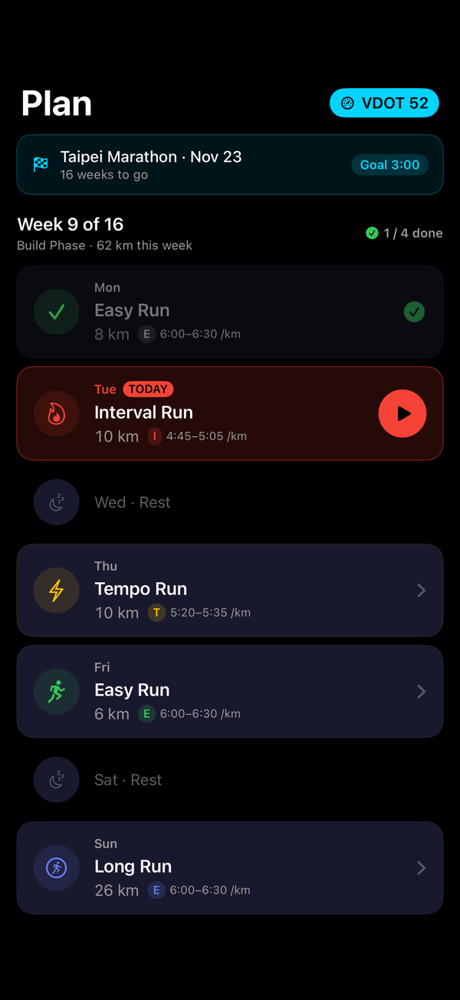
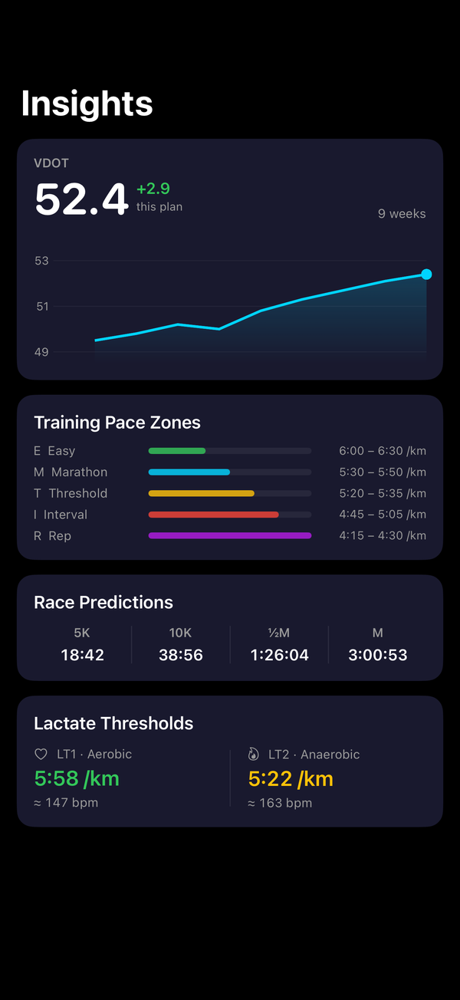
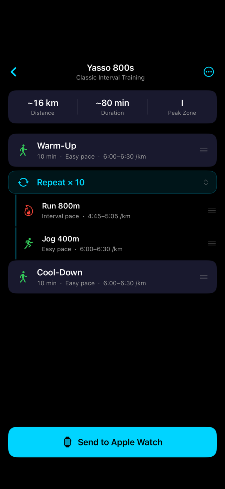
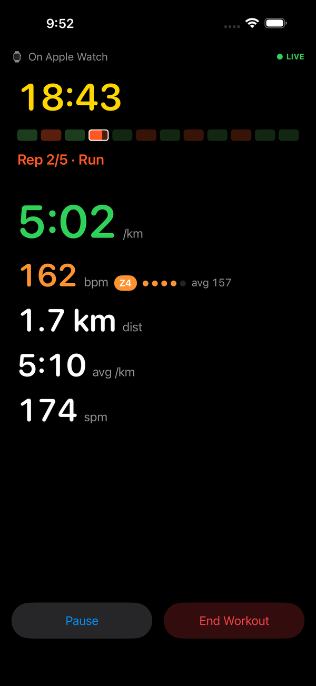
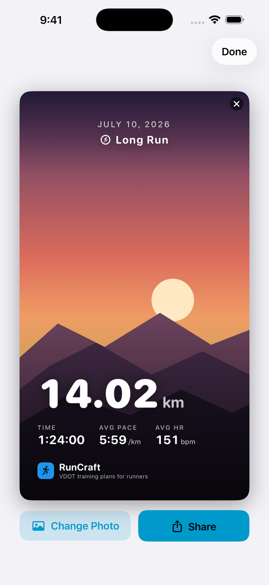

Know exactly
what to run today
RunCraft turns the proven VDOT methodology into a personal running coach on your iPhone and Apple Watch — a periodized plan, watch-guided pacing, and insights that turn every run into progress.

Built on VDOT, not vibes
Tell it your race and a recent result. RunCraft derives your fitness score and builds every session around your real paces — easy runs kept genuinely easy, quality sessions with precise targets.
Personalized pace zones
Your VDOT score, derived from a real race, calculates every training zone precisely.
- Easy, Marathon, Threshold, Interval and Repetition paces
- Race predictions from 5K to marathon
- Zones update automatically as your fitness improves

A plan that knows today
A periodized 16-week schedule toward race day, built automatically from your VDOT.
- Open the app — today's session is right there
- Lock Screen and Home Screen widgets keep it one glance away
- Adjusts recovery days when your readiness dips
Build your own workouts
Design interval sessions with the drag-and-drop editor and send them to Apple Watch with one tap.
- Warmup, work, recovery and cooldown blocks
- Distance or time-based goals per step
- Pace alerts configured per interval

Training-load guard
An acute-to-chronic load ratio watches your ramp-up so you don't overreach.
- Weekly load trend shown as a clear banner
- Warns before you spike into injury risk
- 80/20 easy-run check keeps recovery days honest

Every run, understood
Detailed post-run analysis that turns splits data into actionable insight.
- Per-kilometre splits with pace and heart-rate
- Effort rating vs your planned session
- VDOT progress over time

Made to be shared
Turn any run into a story-format card — clean stats over your own photo, sized for Instagram.
- Pick a photo from your library
- Stats overlaid automatically
- Preview before you post

A pacing coach on your wrist
Run the session, not the math
Start today's workout straight from the watch. During the run, RunCraft guides every step:
- Live pace target with on-target feedback
- Heart-rate zone display with haptic alerts when you drift
- Interval progress — rep count, distance remaining
- A complication that shows today's session on your watch face

Questions or feedback?
Reviews & feedback
Once RunCraft is on the App Store, ratings and reviews are the best place to share feedback — we read every one.
Privacy
Your health data stays yours — computed on device, synced privately via iCloud. Read the policy